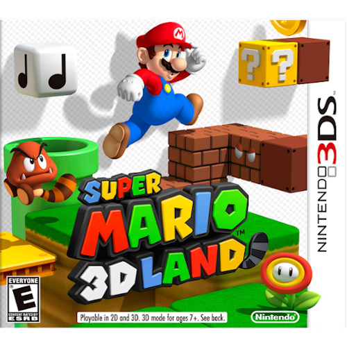
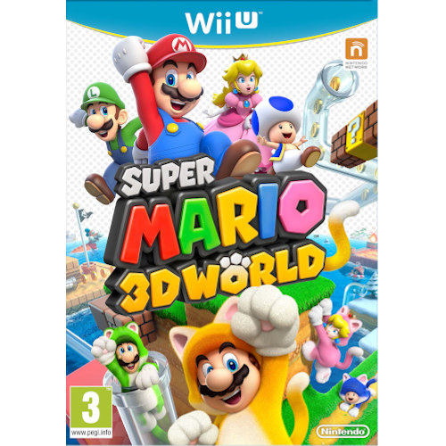
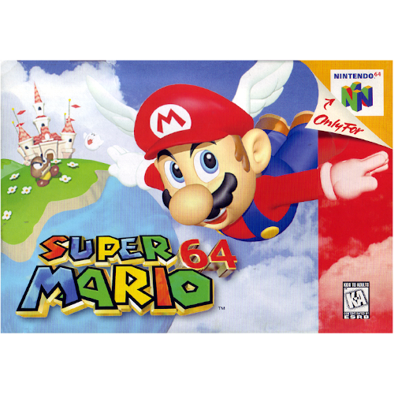
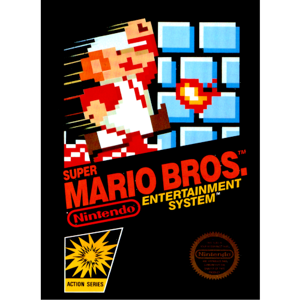
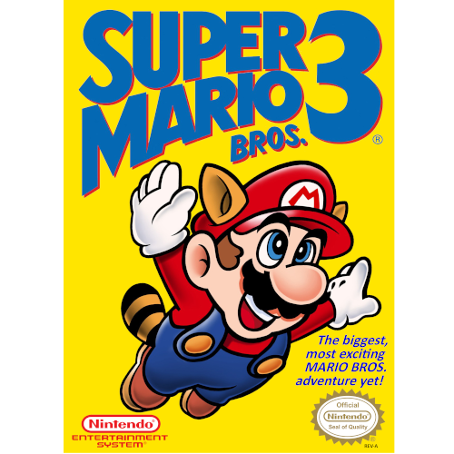
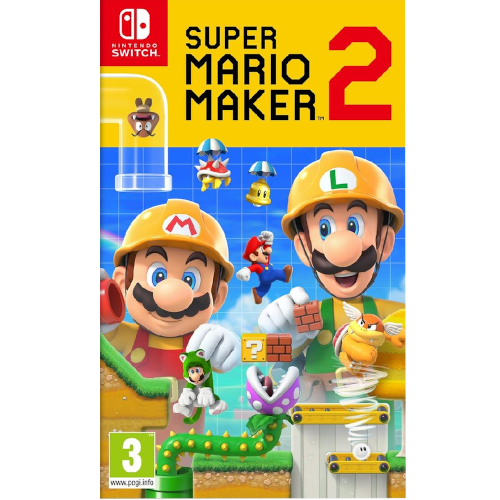
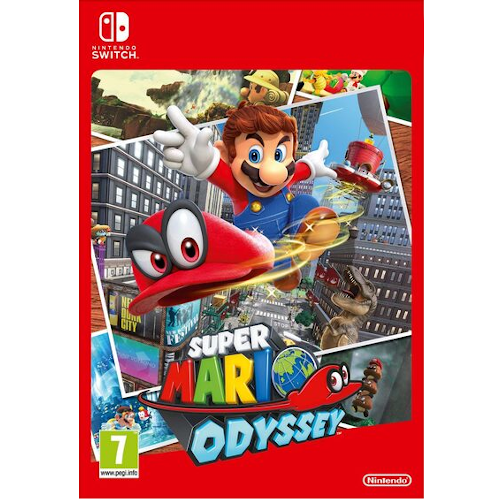
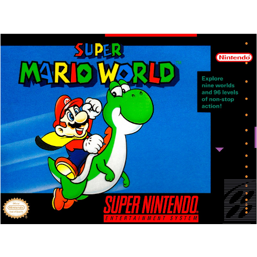
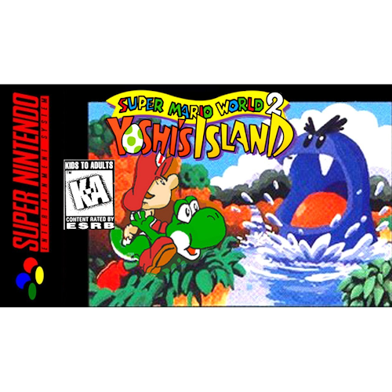

Super Mario 3D Land empieza conociendo a un árbol extraño de superhojas (estas hojas son marrones como si estuviesen mordidas y además tienen cola). Aquél árbol era muy querido por todo el Reino Champiñón. Una noche, una Tormenta violenta asoma por el Reino Champiñón, en el cual Mario y todos los Toads del reino se quedan por varias noches a dormir con la Princesa Peach.
La Princesa Peach preocupada por el árbol, sale a ver cómo está, donde después se oye una risa maléfica de Bowser. Al día siguiente, las superhojas del árbol no están y la Princesa Peach no regresaba aún, y en eso Mario y tres Toads de colores Rojo, Amarillo y Azul ven una carta donde aparece la imagen de Bowser que tenía secuestrada a la Princesa Peach y a las superhojas. Mario se ve en la misión de rescatar a la Princesa Peach del malvado Bowser atravesando distintos mundos, ahora con la ayuda de las superhojas hasta llegar al Castillo de Bowser.
Mario y sus amigos están disfrutando de una fantástica noche de fuegos artificiales en el Reino Champiñón cuando se encuentran con una misteriosa tubería de cristal, ¡y una princesa hada muy nerviosa!.
Poco tardan en enterarse de que Bowser ha hecho de las suyas. Esta vez se está dedicando a embotellar hadas y luego se las queda como presas. Cuando Bowser vuelve a hacer acto de presencia y se lleva a su nueva amiga en sus narices, Mario, Luigi, la princesa Peach y Toad se lanzan por la tubería hasta el Reino Feri para salvarla y para truncar una vez más los planes de Bowser.
Super Mario 64 comienza con una carta de la Princesa Peach en la que invita a Mario a su castillo para comer un pastel que ella misma preparó para él. Cuando él llega, Mario se da cuenta de que Bowser ha invadido el castillo y encerró a la Princesa y sus sirvientes dentro de él usando el poder de 70 de las 120 estrellas de poder del castillo. Muchos de los cuadros del castillo son portales hacia otros mundos, en los que los secuaces de Bowser cuidan las estrellas.
Mario debe buscar los portales y entrar a ellos para recuperarlas. A medida que va encontrando más estrellas, Mario logra tener acceso a más partes del castillo, llegando a tener tres batallas con Bowser al conseguir 8, 30 y 70 estrellas. Tras vencer a Bowser por tercera vez, Peach es rescatada y el poder de las estrellas del castillo es recuperado. Peach recompensa a Mario con el pastel que le prometió.
Super Mario Bros. tiene lugar en el pacífico Reino Champiñón (キノコ王国 Kinoko Ōkoku?, Mushroom Kingdom en la versión en inglés), donde viven hongos antropomorfos, que fue invadido por los Koopa, una tribu de tortugas. El tranquilo pueblo es convertido en piedra y ladrillos, y el reino de los champiñones se va a la ruina. La única que puede deshacer el influjo mágico de ellos es la Princesa Peach, hija del Rey Champiñón. Desafortunadamente, está en las garras del Rey Tortuga Koopa, Bowser
Mario, un humano residente en el Reino Champiñón, escucha las llamadas de socorro de la Princesa, y junto a su hermano Luigi se dispone a rescatarla y expulsar a los invasores Koopas del reino
El Mundo Champiñón es atacado por el Rey de los Koopas. Esta vez, Bowser ha enviado a sus siete hijos, conocidos como Koopalings (コクッパ Ko Kuppa?, lit. "Niños Koopa"), para hacer lo que se les antoje en cada reino, robando los cetros (varitas mágicas) de los siete reyes que gobiernan en dicho mundo y convirtiéndolos en animales y plantas.
Mario y Luigi son llamados nuevamente y en cada uno de estos mundos se infiltran en las naves de los Koopalings, derrotándolos y recuperando las varitas que custodian, para con ello devolver a la normalidad a los reyes y sus reinos.45 Después de salvar el último reino, Mario y Luigi reciben una carta de Bowser diciéndoles que ha raptado a la princesa Peach, por lo que deberán derrotarlo para rescatarla.
La historia de Super Mario Land se desarrolla en el pacífico reino de Sarasaland, que está dividido en cuatro regiones: Birabuto (basado en Egipto), Muda (basado en las islas de las Bermudas), Easton (basado en la isla de Pascua), y Chai (basado en China).

Tras la llegada de un extraterrestre llamado Tatanga al reino, todos los habitantes de Sarasaland son hipnotizados por él, que acto seguido rapta a la Princesa Daisy para después casarse con ella. Mario entonces se dispone a rescatar a la princesa de las garras del extraterrestre viajando por las distintas zonas del reino, y va derrotando a los secuaces de Tatanga. Finalmente, Mario lo acorrala en los cielos de la región de Chai, reduciendo su nave y rescata a la princesa Daisy.
La secuela agrega varios elementos y herramientas, incluidos elementos y un estilo de nivel basado en Super Mario 3D World. Este estilo es especialmente diferente de los otros cuatro, con muchas características exclusivas únicas.4 También introduce modos cooperativos locales y en línea, que incluyen: creación cooperativa de niveles, donde hasta 2 jugadores pueden crear etapas juntos al mismo tiempo; y permitir que hasta 4 jugadores jueguen niveles en línea, juntos o entre sí.
Super Mario Maker 2 presenta una campaña para un solo jugador conocida como "modo historia". La historia sigue a Mario, que debe ayudar a reconstruir el castillo de la Princesa Peach. Los jugadores deben superar más de 100 niveles creados por Nintendo para recolectar suficientes monedas para reconstruir el castillo. Los personajes no jugables también ofrecerán a los jugadores tareas adicionales durante el modo historia.
Mario se enfrenta contra Bowser dentro de su nave. El villano ya estaba vestido y preparado para casarse con la Princesa Peach (a quien ya la tenía secuestrada). Después de una fuerte pelea, Bowser le lanza su sombrero a Mario para tirarlo de la nave (el primer golpe solo le tira el gorro a Mario, pero luego el sombrero regresa con efecto boomerang, y logra tirarlo de la nave). Después Bowser pisotea el gorro que se le había caído a Mario y se va del Reino Champiñón con la princesa, permitiendo que las hélices de su nave trituren el gorro.
La escena termina con un pequeño fantasma con forma de sombrero atrapando un pedazo del gorro que lleva la letra "M" de Mario, y mirando la nave de Bowser alejándose. Tras toda la aventura, Mario enfrenta a Bowser en plena boda. Cuando acaba la pelea, Bowser y Mario intentan seducir a Peach. La princesa los rechaza a los dos y activa la nave Oddysey. En el último momento Mario salta sobre Bowser, que se queda en la Luna.
Después de salvar el Mushroom Kingdom, los hermanos Mario y Luigi acuerdan irse de vacaciones a un lugar llamado «Dinosaur Land», donde habitan diversos tipos de dinosaurios. Mientras descansaban en la playa, la Princesa Toadstool desaparece. Cuando Mario y Luigi despiertan, ellos intentan encontrarla, y después de horas de búsqueda, se topan con un huevo gigante que yacía en un bosque. De repente, este eclosiona y de él sale un joven dinosaurio llamado Yoshi, quien les dice que sus amigos dinosaurios también fueron encerrados dentro de huevos por unas «tortugas malignas». Mario y Luigi pronto se dan cuenta de que el responsable de estos actos debe ser el «Malvado Rey Koopa» Bowser (クッパ大王 Kuppa Daiō?), junto con sus hijos, los «Koopalings» (コクッパ Ko Kuppa?).
Mario, Luigi y Yoshi se disponen a salvar a la Princesa Toadstool y a los amigos dinosaurios de Yoshi, explorando la «Dinosaur Land» para derrotar al Rey Koopa y a los Koopalings. Para ayudar a los protagonistas, el pequeño dinosaurio verde les regala una capa a medida que comienzan su travesía. Ambos personajes continúan siguiendo el rastro de Bowser, derrotando a los hijos del malvado rey durante el proceso, y rescatando de paso, a todos los amigos de Yoshi. Ellos finalmente llegan al castillo de Bowser, donde ellos lo confrontan en una batalla final. Consecuentemente, los hermanos derrotan al Rey Koopa y salvan a la Princesa, restaurando así de nuevo la paz en «Dinosaur Land».
La historia empieza con Kamek, un malvado Magikoopa que quiere secuestrar a Baby Mario y Baby Luigi. Tras un ligero error de cálculo, Kamek falla y solo se lleva a Baby Luigi y Baby Mario cae a la isla de los Yoshis (Yoshi's Island, el primer escenario del mundo Dinosaur Land en Super Mario World). Un Yoshi verde al encontrarlo en su camino decide devolverlo a su familia, con el apoyo de sus otros amigos Yoshi.
Incluso Baby Bowser, tiene su historia en este juego como súbdito de Kamek. Aparece en el último nivel donde se molesta por el mucho ruido que hay, lo cual ocasiona que aplaste a Kamek. Después se pone celoso, porque quería estar él montado en un Yoshi en lugar de Mario. En su ira atacará a ambos. Cuando es derrotado, Kamek le agranda con poderes mágicos. La batalla final transcurre fuera del castillo donde el gigante baby Bowser lanza llamaradas de fuego, levanta rocas y se va acercando a donde estan Yoshi y Mario. En medio de la pelea, aparecen unos huevos que debe agarrar yoshi y que son la única forma de vencerlo. Cuando baby Bowser es derrotado,vuelve a su estado original y se lo lleva Kamek asegurando que algún día volverán. Al final logran rescatar a la cigüeña y a baby Luigi y acaba la trama.